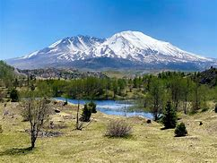
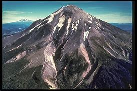

Mount St Helens South area
Forest Road 83:
This nine-mile, paved road passes through forests, over 2,000 year-old lava flows and across a mudflow created during the 1980 eruption.
From Forest Road 8303:
A spur road, visit Trail of Two Forests Interpretive Site or Ape Cave. Continuing driving on 83 to access June Lake Trail, Lahar Viewpoint (the only clear view of the mountain’s south side from the road), Ape Canyon Trail and Lava Canyon Interpretive Site. See Mount St. Helens Map.
Forest Road 81:
This mostly paved but several miles of gravel, rough road transports you through less traveled parts of the Monument. Spur Road 830 ends at Climber’s Bivouac Trailhead, the start of the summer climbing route. The road winds west to Red Rock Pass, Blue Lake Trailhead, and Kalama Horse Camp Campground, eventually connecting back with Highway 503.
 | Fees | Restrictions | Restrooms |
|---|---|---|
| $5 | Climbing Permits are by advance reservation only from April 1st thru October 31st. A climbing quota is in effect of 110 climbers per day May 15th thru October 31st. | Ape Cave |
| Vehicle | A climbing quota is in effect of 110 climbers per day May 15th thru October 31st. | Lava Canyon |
| Day or valid Recreation Pass required | No parking allowed on Forest Road 83. | Climbers Bivouac |